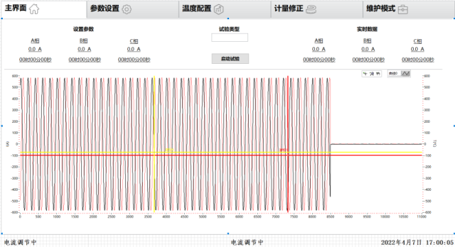
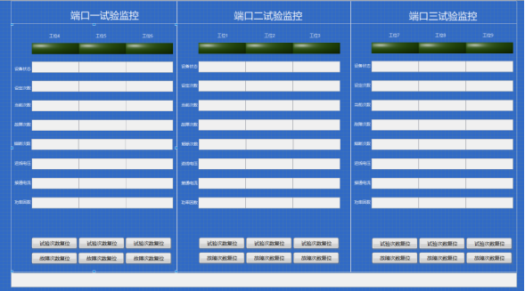
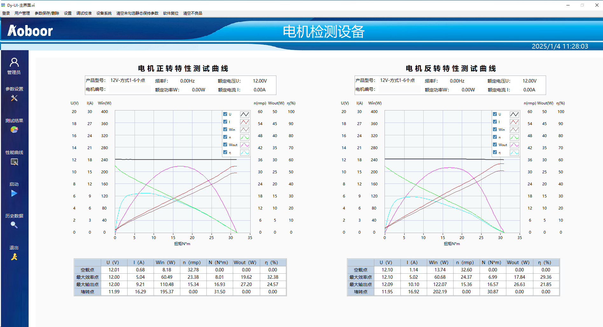
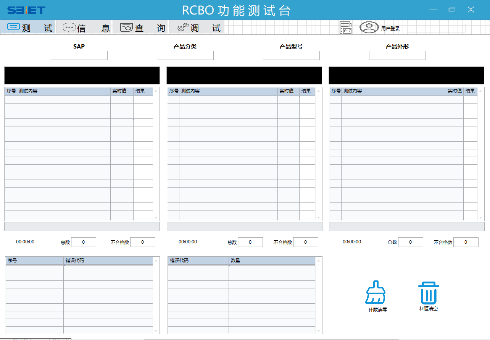
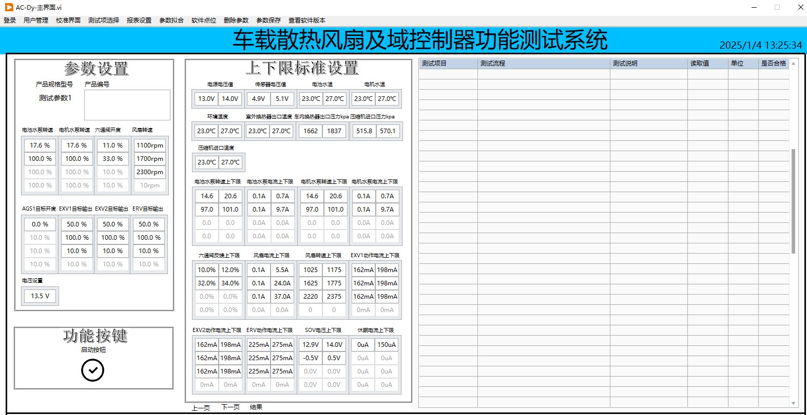

|
个人简介 | 详细介绍 | 黑白风格界面 | 工业风格界面 | 备用 |
|
姓名：** |
|  |
|
做过的项目有汽车方面车载散热风扇及域控制器检测，还有一些汽车电机检测，还有汽车充电桩把手检测；
也有军工方向的检测军用船舶电气板卡的检测；以及低压电器方向，有断路器、接触器、
继电器的温升、寿命、可靠性、长延时、短延时以及其他类型试验，以及一些自动化产线项目 |
|  |
|
这些界面有低压电器方面的软件，有产线方面的软件，也有汽车检测方面软件，
以及军工方向。下面这个软件是检测电机性能曲线。 |
|  |
|
下面这个软件是用于自动化产线检测使用。 |
|  |
|
下面这个是用于汽车风扇电机检测以及域控制器检测检测使用（包括水泵、气压阀、六通阀、
空调扇叶电机以及各种传感器参数）。 |
|  |